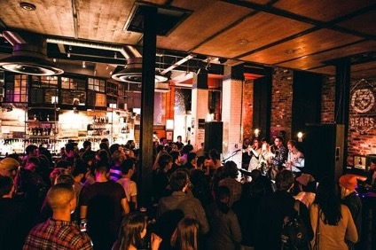

Bungalows and Bears
Bungalows and Bears guarantee a successful visit every time. On the fashionable Division Street in the city center, this stylish music and drinks venue offers it all. From locally sourced ale to obscure foreign beer, to atmospheric indie music to raucous live jazz performances, there is guaranteed to be something to suit everyone. As a large venue, it can host a lot of people, and on summer days the floor to ceiling windows peel right back to allow direct access onto the street, for all your dancing needs. Although the prices may seem a little high compared to others on this list, you’ll agree they’re worth it after one sip of a watermelon martini or a glance at their extensive whiskey collection. If anywhere in Sheffield can be said to have it all, it surely must be Bungalows and Bears!

Bungalows and Bears Website
Google Maps
Bar One
Naturally a student favourite, the University of Sheffield Student’s Union Bar One is a conveniently located, cheerful drinks venue. While evenings can be jam packed in anticipation of nights out, day times offer a relaxed, chilled out atmosphere. Some original offerings of Bar One include the infamous Passionbomb drinks, jam jar cocktails, and a full burger menu inclusive of all dietary requirements (certainly beyond standard pub grub!). Budget is definitely a priority here, which is clear by the surprisingly high quality 99p tea and coffee; just don’t look too closely at the sticky floors after a busy evening prior.

Bar One Website
Google Maps
Nottingham House
Nottingham house is one of the most beloved pubs in Sheffield. Conveniently located for University of Sheffield students in the heart of Broomhill, this warm and welcoming venue offers plenty of local charm as a cosy traditional pub - complete with worn down sofas and board games. Affectionately referred to as ‘Notty House’ by it’s regulars, the pub offers reasonably priced drinks, a weekly quiz, and a highly recommended pie menu that changes daily.

Nottingham House Website
Google Maps
Hallamshire House
Known by locals as ‘Hally House,’ this pub is tucked away in a corner of Crookesmoor, far from the hustle and bustle of the city center. Located ideally amongst privately rented student housing areas, it of course has a loyal student following from both city universities. Chase down a pint with a game of darts or pool, in the stylishly shabby hipster venue, complete with stained glass windows. Their wide selection of regional and local beers, ales, and stouts offer a unique taste of South.

Hallamshire Hotel Website
Google Maps
Bloo 88
Located right in the hub of Sheffield nightlife on West Street, Bloo 88 is a stylish cocktail bar guaranteed to leave you giddy. Their extensive menu is incredibly reasonably priced, and well worth it for the atmospheric surroundings of bare brick walls and retro furnishings (there is also a private function room available up the art-deco-styled stairs). Their kitchen offers a selection of thin-crust pizza as a perfect accompaniment to your generously-sized drinks. The bar often runs deals making this a venue with even better value for money; the two-for-tuesdays deal allows patrons to purchase two-for-the-price-of-one everything, while Fridays come with the promise of bottomless mimosas for £10!

Bloo 88 Website
Google Maps